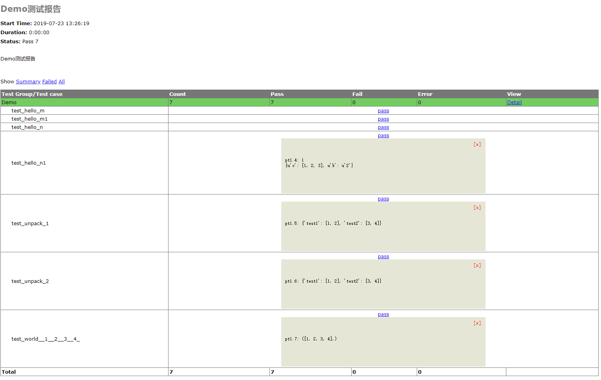

原文出处:本文由博客园博主Secret608提供。
原文连接:https://www.cnblogs.com/aoaoao/p/11200300.html
原文连接:https://www.cnblogs.com/aoaoao/p/11200300.html
时隔已久，再次冒烟，自动化测试工作仍在继续，自动化测试中的数据驱动技术尤为重要，不然咋去实现数据分离呢，对吧，这里就简单介绍下与传统unittest自动化测试框架匹配的DDT数据驱动技术。
话不多说，先撸一波源码，其实整体代码并不多


# -*- coding: utf-8 -*-
# This file is a part of DDT (https://github.com/txels/ddt)
# Copyright 2012-2015 Carles Barrobés and DDT contributors
# For the exact contribution history, see the git revision log.
# DDT is licensed under the MIT License, included in
# https://github.com/txels/ddt/blob/master/LICENSE.md
import inspect
import json
import os
import re
import codecs
from functools import wraps
try:
import yaml
except ImportError: # pragma: no cover
_have_yaml = False
else:
_have_yaml = True
__version__ = '1.2.1'
# These attributes will not conflict with any real python attribute
# They are added to the decorated test method and processed later
# by the `ddt` class decorator.
DATA_ATTR = '%values' # store the data the test must run with
FILE_ATTR = '%file_path' # store the path to JSON file
UNPACK_ATTR = '%unpack' # remember that we have to unpack values
index_len = 5 # default max length of case index
try:
trivial_types = (type(None), bool, int, float, basestring)
except NameError:
trivial_types = (type(None), bool, int, float, str)
def is_trivial(value):
if isinstance(value, trivial_types):
return True
elif isinstance(value, (list, tuple)):
return all(map(is_trivial, value))
return False
def unpack(func):
"""
Method decorator to add unpack feature.
"""
setattr(func, UNPACK_ATTR, True)
return func
def data(*values):
"""
Method decorator to add to your test methods.
Should be added to methods of instances of ``unittest.TestCase``.
"""
global index_len
index_len = len(str(len(values)))
return idata(values)
def idata(iterable):
"""
Method decorator to add to your test methods.
Should be added to methods of instances of ``unittest.TestCase``.
"""
def wrapper(func):
setattr(func, DATA_ATTR, iterable)
return func
return wrapper
def file_data(value):
"""
Method decorator to add to your test methods.
Should be added to methods of instances of ``unittest.TestCase``.
``value`` should be a path relative to the directory of the file
containing the decorated ``unittest.TestCase``. The file
should contain JSON encoded data, that can either be a list or a
dict.
In case of a list, each value in the list will correspond to one
test case, and the value will be concatenated to the test method
name.
In case of a dict, keys will be used as suffixes to the name of the
test case, and values will be fed as test data.
"""
def wrapper(func):
setattr(func, FILE_ATTR, value)
return func
return wrapper
def mk_test_name(name, value, index=0):
"""
Generate a new name for a test case.
It will take the original test name and append an ordinal index and a
string representation of the value, and convert the result into a valid
python identifier by replacing extraneous characters with ``_``.
We avoid doing str(value) if dealing with non-trivial values.
The problem is possible different names with different runs, e.g.
different order of dictionary keys (see PYTHONHASHSEED) or dealing
with mock objects.
Trivial scalar values are passed as is.
A "trivial" value is a plain scalar, or a tuple or list consisting
only of trivial values.
"""
# Add zeros before index to keep order
index = "{0:0{1}}".format(index + 1, index_len)
if not is_trivial(value):
return "{0}_{1}".format(name, index)
try:
value = str(value)
except UnicodeEncodeError:
# fallback for python2
value = value.encode('ascii', 'backslashreplace')
test_name = "{0}_{1}_{2}".format(name, index, value)
return re.sub(r'\W|^(?=\d)', '_', test_name)
def feed_data(func, new_name, test_data_docstring, *args, **kwargs):
"""
This internal method decorator feeds the test data item to the test.
"""
@wraps(func)
def wrapper(self):
return func(self, *args, **kwargs)
wrapper.__name__ = new_name
wrapper.__wrapped__ = func
# set docstring if exists
if test_data_docstring is not None:
wrapper.__doc__ = test_data_docstring
else:
# Try to call format on the docstring
if func.__doc__:
try:
wrapper.__doc__ = func.__doc__.format(*args, **kwargs)
except (IndexError, KeyError):
# Maybe the user has added some of the formating strings
# unintentionally in the docstring. Do not raise an exception
# as it could be that user is not aware of the
# formating feature.
pass
return wrapper
def add_test(cls, test_name, test_docstring, func, *args, **kwargs):
"""
Add a test case to this class.
The test will be based on an existing function but will give it a new
name.
"""
setattr(cls, test_name, feed_data(func, test_name, test_docstring,
*args, **kwargs))
def process_file_data(cls, name, func, file_attr):
"""
Process the parameter in the `file_data` decorator.
"""
cls_path = os.path.abspath(inspect.getsourcefile(cls))
data_file_path = os.path.join(os.path.dirname(cls_path), file_attr)
def create_error_func(message): # pylint: disable-msg=W0613
def func(*args):
raise ValueError(message % file_attr)
return func
# If file does not exist, provide an error function instead
if not os.path.exists(data_file_path):
test_name = mk_test_name(name, "error")
test_docstring = """Error!"""
add_test(cls, test_name, test_docstring,
create_error_func("%s does not exist"), None)
return
_is_yaml_file = data_file_path.endswith((".yml", ".yaml"))
# Don't have YAML but want to use YAML file.
if _is_yaml_file and not _have_yaml:
test_name = mk_test_name(name, "error")
test_docstring = """Error!"""
add_test(
cls,
test_name,
test_docstring,
create_error_func("%s is a YAML file, please install PyYAML"),
None
)
return
with codecs.open(data_file_path, 'r', 'utf-8') as f:
# Load the data from YAML or JSON
if _is_yaml_file:
data = yaml.safe_load(f)
else:
data = json.load(f)
_add_tests_from_data(cls, name, func, data)
def _add_tests_from_data(cls, name, func, data):
"""
Add tests from data loaded from the data file into the class
"""
for i, elem in enumerate(data):
if isinstance(data, dict):
key, value = elem, data[elem]
test_name = mk_test_name(name, key, i)
elif isinstance(data, list):
value = elem
test_name = mk_test_name(name, value, i)
if isinstance(value, dict):
add_test(cls, test_name, test_name, func, **value)
else:
add_test(cls, test_name, test_name, func, value)
def _is_primitive(obj):
"""Finds out if the obj is a "primitive". It is somewhat hacky but it works.
"""
return not hasattr(obj, '__dict__')
def _get_test_data_docstring(func, value):
"""Returns a docstring based on the following resolution strategy:
1. Passed value is not a "primitive" and has a docstring, then use it.
2. In all other cases return None, i.e the test name is used.
"""
if not _is_primitive(value) and value.__doc__:
return value.__doc__
else:
return None
def ddt(cls):
"""
Class decorator for subclasses of ``unittest.TestCase``.
Apply this decorator to the test case class, and then
decorate test methods with ``@data``.
For each method decorated with ``@data``, this will effectively create as
many methods as data items are passed as parameters to ``@data``.
The names of the test methods follow the pattern
``original_test_name_{ordinal}_{data}``. ``ordinal`` is the position of the
data argument, starting with 1.
For data we use a string representation of the data value converted into a
valid python identifier. If ``data.__name__`` exists, we use that instead.
For each method decorated with ``@file_data('test_data.json')``, the
decorator will try to load the test_data.json file located relative
to the python file containing the method that is decorated. It will,
for each ``test_name`` key create as many methods in the list of values
from the ``data`` key.
"""
for name, func in list(cls.__dict__.items()):
if hasattr(func, DATA_ATTR):
for i, v in enumerate(getattr(func, DATA_ATTR)):
test_name = mk_test_name(name, getattr(v, "__name__", v), i)
test_data_docstring = _get_test_data_docstring(func, v)
if hasattr(func, UNPACK_ATTR):
if isinstance(v, tuple) or isinstance(v, list):
add_test(
cls,
test_name,
test_data_docstring,
func,
*v
)
else:
# unpack dictionary
add_test(
cls,
test_name,
test_data_docstring,
func,
**v
)
else:
add_test(cls, test_name, test_data_docstring, func, v)
delattr(cls, name)
elif hasattr(func, FILE_ATTR):
file_attr = getattr(func, FILE_ATTR)
process_file_data(cls, name, func, file_attr)
delattr(cls, name)
return cls通过源码的说明，基本可以了解个大概了，其核心用法就是利用装饰器来实现功能的复用及扩展延续，以此来实现数据驱动，现在简单介绍下其主要函数的基本使用场景。
1. @ddt(cls)，其服务于unittest类装饰器，主要功能是判断该类中是否具有相应ddt装饰的方法，如有则利用自省机制，实现测试用例命名mk_test_name、数据回填_add_tests_from_data并通过add_test添加至unittest的容器TestSuite中去，然后执行得到testResult，流程非常清晰。
def ddt(cls):
for name, func in list(cls.__dict__.items()):
if hasattr(func, DATA_ATTR):
for i, v in enumerate(getattr(func, DATA_ATTR)):
test_name = mk_test_name(name, getattr(v, "__name__", v), i)
test_data_docstring = _get_test_data_docstring(func, v)
if hasattr(func, UNPACK_ATTR):
if isinstance(v, tuple) or isinstance(v, list):
add_test(
cls,
test_name,
test_data_docstring,
func,
*v
)
else:
# unpack dictionary
add_test(
cls,
test_name,
test_data_docstring,
func,
**v
)
else:
add_test(cls, test_name, test_data_docstring, func, v)
delattr(cls, name)
elif hasattr(func, FILE_ATTR):
file_attr = getattr(func, FILE_ATTR)
process_file_data(cls, name, func, file_attr)
delattr(cls, name)
return cls
2. @file_data(PATH)，其主要是通过process_file_data方法实现数据解析，这里通过_add_tests_from_data实现测试数据回填，通过源码可以得知目前文件只支持Yaml和JSON数据文件，想扩展其它文件比如xml等直接改源码就行
def process_file_data(cls, name, func, file_attr):
"""
Process the parameter in the `file_data` decorator.
"""
cls_path = os.path.abspath(inspect.getsourcefile(cls))
data_file_path = os.path.join(os.path.dirname(cls_path), file_attr)
def create_error_func(message): # pylint: disable-msg=W0613
def func(*args):
raise ValueError(message % file_attr)
return func
# If file does not exist, provide an error function instead
if not os.path.exists(data_file_path):
test_name = mk_test_name(name, "error")
test_docstring = """Error!"""
add_test(cls, test_name, test_docstring,
create_error_func("%s does not exist"), None)
return
_is_yaml_file = data_file_path.endswith((".yml", ".yaml"))
# Don't have YAML but want to use YAML file.
if _is_yaml_file and not _have_yaml:
test_name = mk_test_name(name, "error")
test_docstring = """Error!"""
add_test(
cls,
test_name,
test_docstring,
create_error_func("%s is a YAML file, please install PyYAML"),
None
)
return
with codecs.open(data_file_path, 'r', 'utf-8') as f:
# Load the data from YAML or JSON
if _is_yaml_file:
data = yaml.safe_load(f)
else:
data = json.load(f)
_add_tests_from_data(cls, name, func, data)3. @date(*value)，简单粗暴的直观实现数据驱动，直接将可迭代对象传参，进行数据传递，数据之间用逗号“,”隔离，代表一组数据，此时如果实现unpack，则更加细化的实现数据驱动，切记每组数据对应相应的形参。
def unpack(func):
"""
Method decorator to add unpack feature.
"""
setattr(func, UNPACK_ATTR, True)
return func
def data(*values):
"""
Method decorator to add to your test methods.
Should be added to methods of instances of ``unittest.TestCase``.
"""
global index_len
index_len = len(str(len(values)))
return idata(values)
def idata(iterable):
"""
Method decorator to add to your test methods.
Should be added to methods of instances of ``unittest.TestCase``.
"""
def wrapper(func):
setattr(func, DATA_ATTR, iterable)
return func
return wrapper4. 实例
# -*- coding: utf-8 -*-
__author__ = '暮辞'
import time,random
from ddt import ddt, data, file_data, unpack
import unittest
import json
from HTMLTestRunner import HTMLTestRunner
@ddt
class Demo(unittest.TestCase):
@file_data("./migrations/test.json")
def test_hello(self, a, **b):
'''
测试hello
'''
print a
print b
#print "hello", a, type(a)
if isinstance(a, list):
self.assertTrue(True, "2")
else:
self.assertTrue(True, "3")
@data([1, 2, 3, 4])
def test_world(self, *b):
'''
测试world
'''
print b
self.assertTrue(True)
@data({"test1":[1, 2], "test2":[3, 4]}, {"test1":[1, 2],"test2":[3, 4]})
@unpack
def test_unpack(self, **a):
'''
测试unpack
'''
print a
self.assertTrue(True)
if __name__ == "__main__":
suit = unittest.TestSuite()
test = unittest.TestLoader().loadTestsFromTestCase(Demo)
suit.addTests(test)
#suit.addTests(test)
with open("./migrations/Demo.html", "w") as f:
result = HTMLTestRunner(stream=f, description=u"Demo测试报告", title=u"Demo测试报告")
result.run(suit)测试结果：

至此关于ddt的数据驱动暂时告一段落了，后面还会介绍基于excel、sql等相关的数据驱动内容，并进行对比总结，拭目以待~